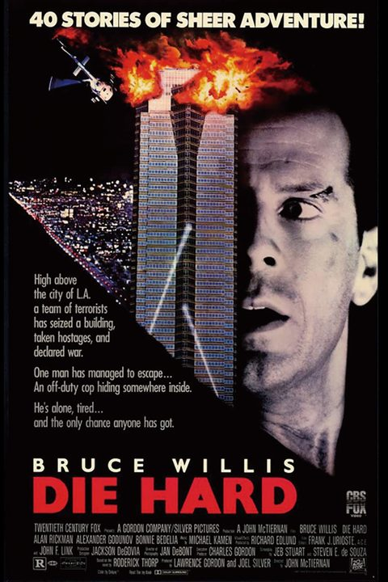
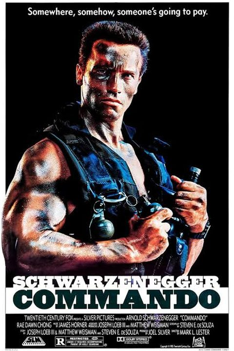
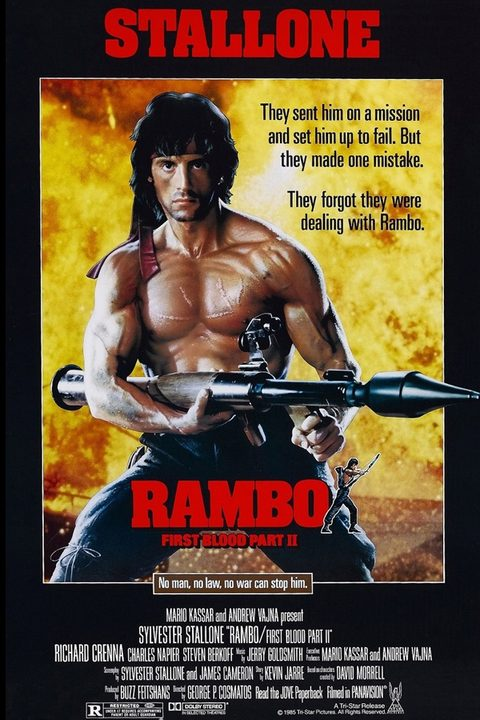

Films/Action, Adventure & Thriller/Die Hard
Die Hard

Film / Action / 1988
Die Hard
2 weapons on file, and who carries them. IMDb
Year1988
GenreAction, Adventure & Thriller
Weapons2
Characters2
Gallery
More Action, Adventure & Thriller
See allCommando

Commando
1985 · 2 weapons
John Wick
John Wick
2014 · 2 weapons
John Wick: Chapter 2
John Wick: Chapter 2
2017 · 1 weapon
John Wick: Chapter 3 - Parabellum
John Wick: Chapter 3 - Parabellum
2019 · 1 weapon
No Country for Old Men
No Country for Old Men
2007 · 1 weapon
Rambo: First Blood Part II

Rambo: First Blood Part II
1985 · 1 weapon